Index
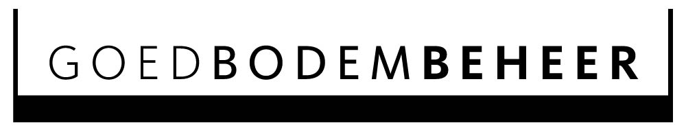
ACTUEEL 2023
Overlijdensbericht Jan Bokhorst
Zondag 15 oktober is op 76-jarige leeftijd Jan Bokhorst overleden. Hij werd gezien als een groot pionier in de biologische landbouw.

BODEM VAN HET JAAR 2023
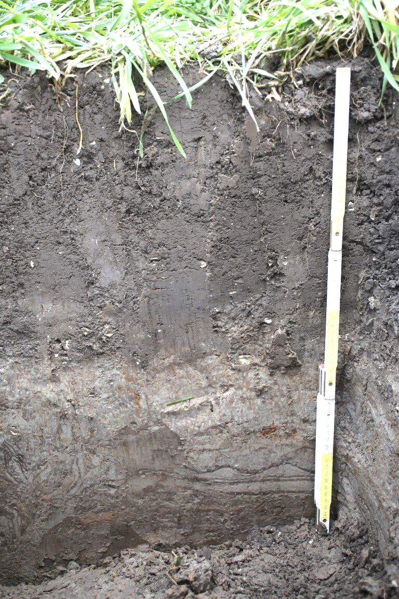
De bodem van het bedrijf Jan Jonkman aan de Bronsweg in Lelystad is gekozen tot de Nederlandse Bodem van het Jaar 2023.
Waarom is deze bodem gekozen en wat zijn de eigenschappen?
WAT HOUDT BODEM VAN HET JAAR IN?

Sinds 2015 is door de Verenigde Naties 5 december uitgeroepen tot “Wereld Bodemdag”.
In navolging van andere landen is nu ook in Nederland op 5 december 2022 voor het eerst de prijs
“Bodem van het Jaar 2023” bekend gemaakt.
Uit 6 genomineerden heeft de jury unaniem de Bodem van het jaar 2023 toegekend aan Jan Jonkman uit Lelystad.
Zijn biodynamisch beheerde bodem was gedurende 31 jaar door Jan Bokhorst (bodemkundige) bemonsterd en geanalyseerd met een verrassend resultaat.
Lees meer over de verkiezing van de bodem door de Nederlandse Bodemkundige Vereniging bij Bodems.nl/nieuws
PRACHTIGE BROCHURE BODEM VAN HET JAAR 2023

Er is nu ook een brochure met:
- Informatie over wat de bodem van het jaar, die door de Nederlandse Bodemkundige Vereniging (NBV) wordt georganiseerd, betekent.
- Informatie over de bodem van 2023
Download de brochure HIER
De bodem
Direct naar
- Graaf een kuil
- Bodemleven
- Bodemstructuur
- Beoordeling visueel
- Bodemanalyse
- Water in de grond
- Organische stof
- Bodem en voedingsstoffen
- Gewas en voedingsstoffen
- Ziektewerendheid

Zandgronden
Een sterk verdichte zandgrond. Hoe je de structuur van bodems kunt verbeteren lees je onder bodembeheer en maatregelen

Zavel- en kleigronden
Ga er voorzichtig mee om want een foute bewerking kan jarenlang gevolgen hebben
De Wageningse hoogleraar bodemkunde Leen Pons gaf lang geleden aan hoe je een bodem kunt beoordelen:
- Graaf een kuil en gooi de grond er weer in. Bij een kwalitatief goede grond heb je niet genoeg grond om de kuil te vullen; bij een slechte grond hou je grond over.
- In een goede grond zit veel lucht en die verdwijnt door graven en aanstampen.


Gras op verdicht veen
Veengronden
Hier kunnen we veel van leren. Het gaat dus niet alleen om veel organische stof, maar vooral om bodemleven voedende organische stof
Gras op mooi los veen


Een organisme
De bodem is een boeiend geheel van mineralen, voedingsstoffen en een zeer divers bodemleven. We weten er nog lang niet alles vanaf en het is op iedere plek weer anders. Toch kunnen we er al heel wat van laten zien.
Bodemleven
De regenworm Lumbricus terrestris leeft zijn hele leven in een enkele verticale gang. Door deze gang kunnen wortels naar beneden, overtollig water afgevoerd worden en kan lucht in de grond komen. Het grote belang van deze wormsoort wordt steeds duidelijker
Bodemchemie
De chemische bodemanalyse is een belangrijk hulpmiddel bij de bemestingskeuze. Bedenk wel dat de grond een uur schudden met een zoutextract niet na kan bootsen wat plantenwortels en bodemleven in het hele groeiseizoen doen. U moet ook zelf nadenken. Wij helpen u daarbij.
De bodem vruchtbaar maken
Nederland per bodemtype
Nederland per gebruikstype
Stad Sport Moestuin

Noord Friesland
Bij gras op zware klei draait alles om de dikte van de donkere doorwortelbare graszode. Hier is deze zeer dik namelijk 13 cm.

Wieringermeer
Wel of niet ploegen. Daar is het laatste woord nog niet over gezegd. Per bedrijf zal de keuze weer anders uitkomen. Uien telen zonder ploegen is het moeilijkste.
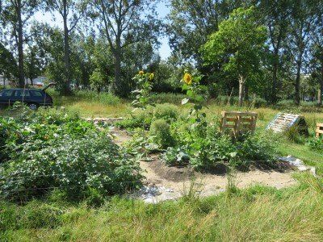
Teelt op karton gaat vaak mis. De grond eronder is te dicht en regenwormen kunnen niet bij de compost die op het karton ligt komen.
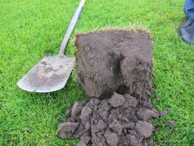
Op een voetbalveld moeten wortels tot 40 cm diep gaan. Dat is hier niet het geval.
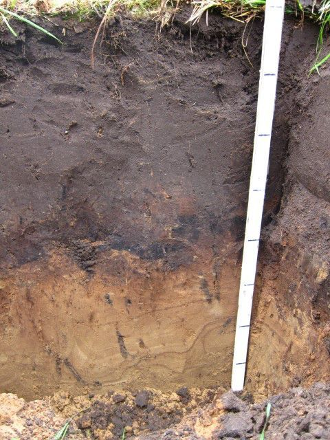
Achterhoek
Bij groenteteelt op zand is het op deze grond niet makkelijk. De plantenwortels komen vrijwel niet door de donkere podzolinspoelingslaag heen. Uitspoeling van voedingsstoffen en droogte in de zomer zijn hier het gevolg van
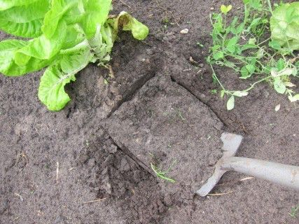
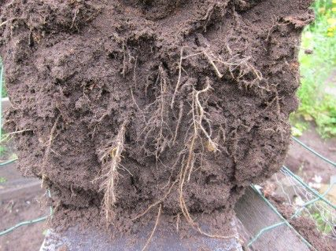
In moestuinen kan vaak veel verbeterd worden aan de bodem. Steek eens een kluit uit. Bij deze slaplant zie je op 20 cm diepte veel wortels. Zo hoort dat! Vaak is de bodem daar al te dicht.
Maatregelen
Direct naar

Groen: goede zuurgraad van gras. Geel, oranje en rood: de grond is te zuur.
-1920w.jpg)
Soms moet de ondergrond losgemaakt worden door te woelen. Beter is het om verdichting te voorkomen door op vaste rijpaden te rijden of diepgravende regenwormen het werk te laten doen.
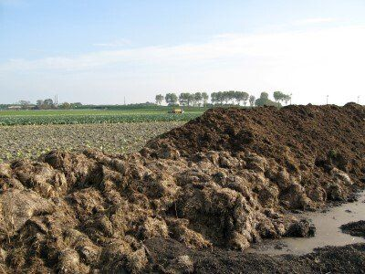
Vaste rundermest. Nog steeds is niet helemaal duidelijk waarom die zo’n buitengewoon goede invloed op de bodem heeft. .
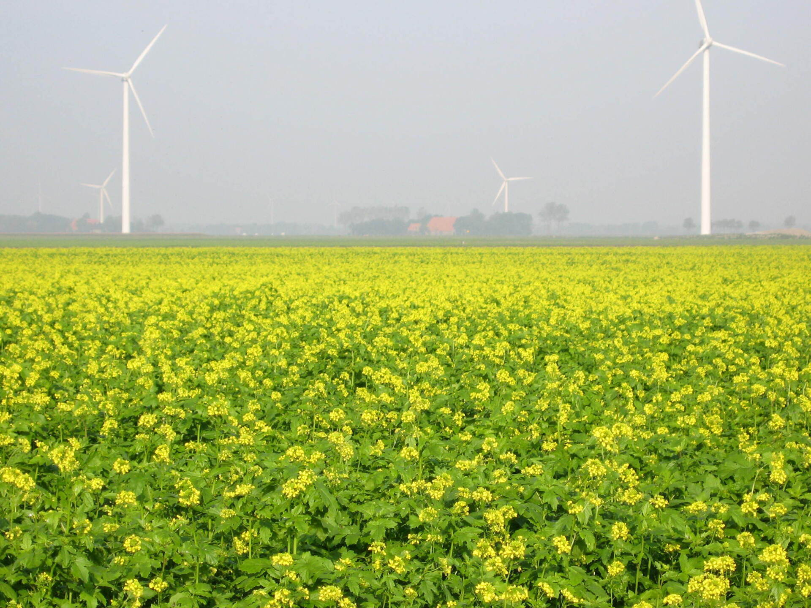
Vlinderbloemigen zijn er in vele soorten en heel belangrijk voor voldoende aanvoer van organische stof. De afgebeelde gele mosterd heeft een diepe penwortel en houdt de bodem toegankleijk naar de diepte. Veel andere wortels heeft dit gewas niet. Voor veel wortels moet je naar de granen en de grassen. Rogge is dan de kampioen.
.
.
Achtergronden
Direct naar
Biologische landbouw
Resultaten biologische bedrijven
Productkwaliteit
Maatschappelijke vraagstukken
Bodems van de wereld
Bodems van de wereld
Diagnosis of soil related crop problems
Bodem en opvoeding

De terra preta in het Amazongebied. Links een vruchtbare grond door duizenden jaren mest en houtskool van vuren te mengen, rechts een oorspronkelijke oerwoudgrond
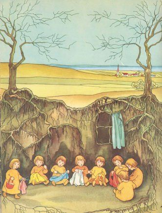
Het is belangrijk om al jong bij kinderen bewustzijn voor de bodem bij te brengen. Om voor te lezen: het boekje de Wortelkindertjes

Periodiek ontploffen er fabrieken of voorraden van kunstmeststikstof. Dit geeft aan hoeveel energie er in stikstofkunstmest zit. Stikstof alleen kan een bodem niet vruchtbaar maken. Deze verbrandt als het ware de humus. Bij stikstof moeten ook koolstofrijke materialen komen. Meng dus stikstofrijk (vlinderbloemige gewassen, mest) met koolstofrijk (wortels van planten, stro)
ACTUEEL
Actueel 2021
PRAKTIJKGIDS WERKEN AAN BODEMVRUCHTBAARHEID GRATIS TE DOWNLOADEN
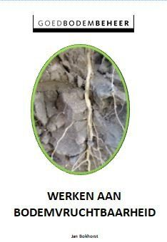
De uitgebreide publicatie WERKEN AAN BODEMVRUCHTBAARHEID gericht op een groot aantal maatregelen in akkerbouw, tuinbouw en grasland als PDF te downloaden. Eerste versie oktober 2021.
Download hier (6 mb)
DE EERSTE LANDBOUW IN ZUID-AMERIKA BEGON 8000 JAAR EERDER DAN VOORHEEN WERD GEDACHT

18.000 jaar geleden trokken de eerste mensen uit Siberië via Alaska Amerika in. Voorheen werd gedacht dat de landbouw pas 2000 jaar geleden begon. Door veel onderzoek de afgelopen 10 jaar blijkt de landbouw al 10.000 jaar geleden begonnen te zijn. De dikke zwarte bodems (Terras pretas) zijn daar getuige van Lees meer
DE VOEDING VAN DE MENS LIJKT WEL WAT OP DIE VAN DE BODEM

Bij mensen die veel fysieke inspanning leveren en ouderen moet er een goede verhouding tussen eiwit en koolhydraten in de voeding zijn. Het gaat om ca. 20 gram eiwit naast 60 gram koolhydraten. Ook bij de bodem is een goede verhouding tussen stikstofrijke en koolstofrijke voeding van belang.
Eiwit bij de mens: kaas, kwark, vlees, vis en vegaproducten.
Bij de bodem klaver en andere vlinderbloemigen, mest.
Koolhydraten bij de mens: rijst, pasta, brood en aardappel.
Bij de bodem: stro, gewasresten en groenbemesters met stevige stengels, groen- en GFT-compost.
Een van beide mag bij mens of bodem nooit overheersen.
REGENWORMHOOPJES IN DE SNEEUW
-1920w.jpg)
Je houdt het niet voor mogelijk. De sneeuw is nog niet helemaal weg en de regenwormen werken al weer aan bodemvruchtbaarheid.
IN DE TOEKOMST VEEL VOEDSEL UIT ZEE? NEE!
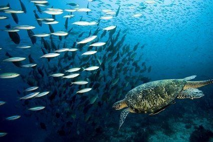
Volgens de FAO, de Europese commissie en veel Wageningse Wetenschappers moeten we ons in de toekomst meer gaan richten op voedselproductie in zee. Theoretisch bioloog Jaap van der Meer is hier duidelijk over. Dat kan niet. Het is alleen beperkt mogelijk en we zitten al tegen de grenzen aan. De reden: te weinig voedingsstoffen. Voor voedselproductie zijn we aangewezen op de landbodems.
IS DE LANDPLATWORM EEN BEDREIGING VOOR REGENWORMEN?
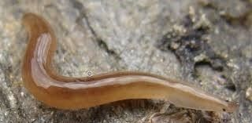
De landplatworm komt in toenemende mate voor in Nederland. Vaak wordt gedacht dat deze een gevaar is voor regenwormen. Dat is niet zo.
Regenwormen leveren een grote bijdrage aan de bodemvruchtbaarheid en kunnen door landplatwormen worden gedood. Hoewel vaak het tegenovergestelde wordt gezegd zijn ze toch geen echt gevaar voor de regenwormen.
DE FAO ORGANISEERDE EEN WEDSRIJD VOOR HET MOOISTE BODEM KINDERBOEK

De uitslag:
Bestanden zijn vrij te downloaden. Voor commercieel gebruik is toestemming nodig: www.fao.org/world-soil-day/bookcontest.
Een boekje dat we in het Nederlands vertaalden: Een reis door de bodem
IS DRIJFMEST NU GOED OF SLECHT VOOR REGENWORMEN?
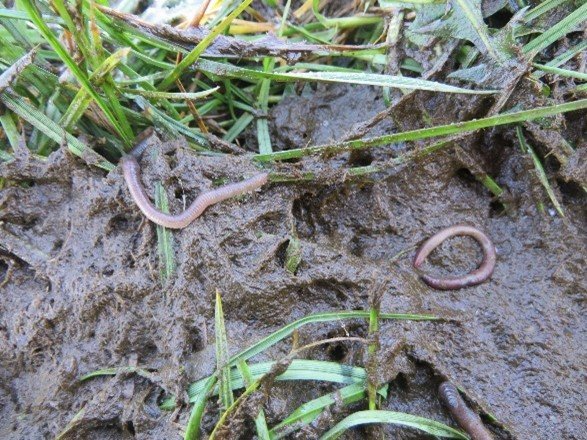
Drijfmest lijkt heel schadelijk voor regenwormen en is dat soms ook. Wanneer goed toegepast stimuleert drijfmest juist de regenwormen.
In grasland zie je soms dode wormen na drijfmesttoediening. Dat komt door giftige stoffen zoals ammonium. Na enige tijd is de ammonium omgezet in nitraat en is de drijfmest voedsel voor regenwormen geworden.
In akkerbouw en groenteteelt werkt drijfmest alleen goed bij voldoende aanbod van koolstofrijk materiaal.
KRINGLOOPLANDBOUW IN CHINA, KOREA EN JAPAN

Gedurende meer dan 3000 jaar was er in het verre oosten een perfecte kringlooplandbouw. King beschreef in 1909 heel precies hoe 700 miljoen mensen leefden in een kringloopsysteem. Hij zag bijna geen vliegen want alle materiaal waar vliegen zich in kunnen vermenigvuldigen was al voor compost in gebruik genomen. Wat men in 30 tot 40 eeuwen had geleerd maakte King zichtbaar. De omstandigheden in 1909 waren anders dan nu in Nederland. De houding van toen kan ons veel leren. Heel goed kijken en daar van leren is een van de onderdelen van die houding. Wij maakten een kort overzicht van dit bijzondere landbouwsysteem.
Actueel 2020
KISS THE GROUND OP NETFLIX. Je mist niet veel wanneer je het niet ziet
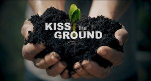
De op zich indrukwekkende film kan bij mensen die totaal niets van de bodem afweten ertoe leiden dat voor hen de bodem en het begrip bodemvruchtbaarheid in beeld komen. Er wordt evenwel veel onzin over de bodem gezegd. Het gevaar bestaat dat voorstanders van een industrielandbouw, met veel kunstmest en gif, het gevoel krijgen dat alternatieve ideeën op drijfzand zijn gebouwd en dat je er geen aandacht aan hoeft te besteden.
BOEREN MET MINDER WATER IN DE MELKVEEHOUDERIJ

Nick van Eekeren in verslag Vruchtbare Kringloop Overijssel:
Dingen die melkveehouders gelijk morgen kunnen doen: naast Engels raaigras ook kruiden en klavers inzaaien. Mengsels met cichorei en smalle weegbree kunnen dieper wortelen, rode grasklaver verdampt veel minder water. Veel boeren zijn ook enthousiast over het kweken van sorghum als veevoer, een graan dat minder water dan mais vraagt. Pendelende regenwormen maken diepe wormengangen en kunnen je waterinfiltratie verdrievoudigen. We doen hier onderzoek naar. Meer info: www.vruchtbarekringloopoverijssel.nl
DUITS ONDERZOEK NAAR DE INVLOED VAN RESTPRODUCTEN VAN DE BIOGASPRODUCTIE OP DE BODEM
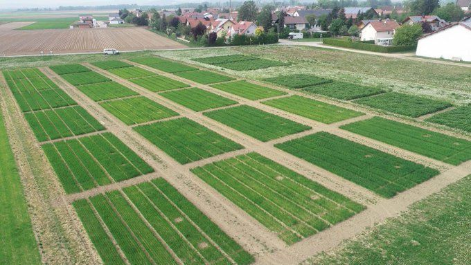
Duits onderzoek naar effect van restproducten van biogasproductie voor de bodem laat zien dat dat de restproducten van biogas bereiding het bodemleven stimuleren, maar het organische stofgehalte niet op peil kunnen houden. Restproducten hebben minder voedsel voor regenwormen dan niet gefermenteerde drijfmest. Deze drijfmest stimuleert regenwormen het sterkst.
Oktober 2020
PLANTSAPANALYSES ZIJN NOG NIET KLAAR VOOR DE PRAKTIJK 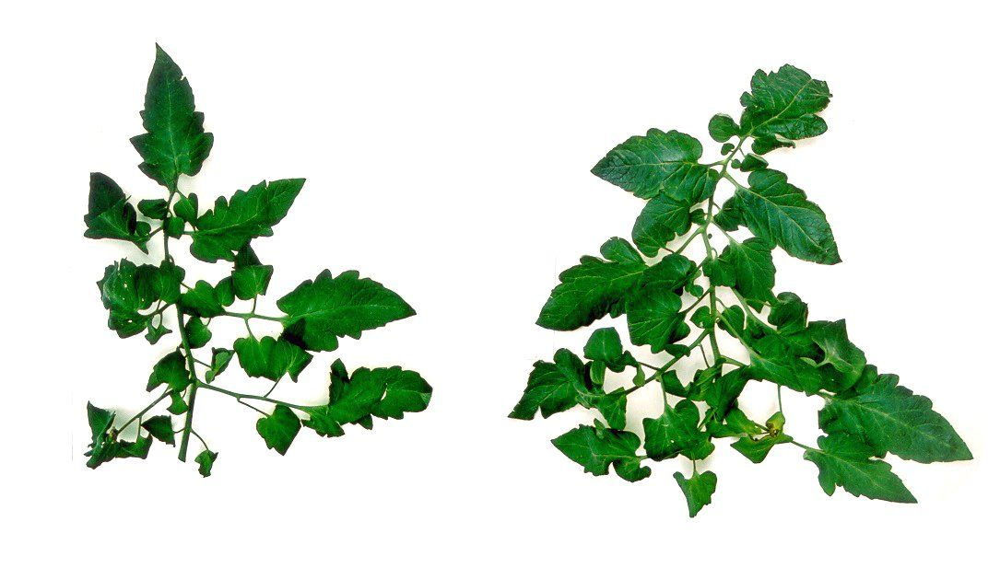
De mogelijkheid om plantsapanalyses uit te laten voeren wordt steeds vaker aangeboden. Er is wel een probleem. De vertaling naar de praktijk is nog niet voldoende onderzocht, maar ook vaak helemaal niet mogelijk. Lees meer DE VERSPREIDING VAN REGENWORMEN IN BEELD GEBRACHT 
Er zijn grote verschillen in aantallen en soorten regenwormen . Binnen Nederland, maar ook over de hele wereld. 140 onderzoekers maakten een kaart. Binnen Nederland zijn er buitengewoon grote verschillen in aantallen regenwormen. Hoe komt dat?Lees meer HET WORTELSTELSEL VAN GROENBEMESTERS 
Granen en grassen wortelen heel intensief. Vlinderbloemigen hebben heel weinig wortels maar deze wortels zijn stikstofrijk en stimuleren het bodemleven. Koolsoorten wortelen wel diep maar de wortelmassa is gering.
download hier
HET LAATSTE SCHILDERIJ VAN VINCENT VAN GOGH WAS EEN BODEMPROFIEL -1920w.jpg)
Dit jaar is ontdekt waar Vincent van Gogh zijn laatste schilderij maakte. Het schilderij ‘Boomwortels’ is gemaakt langs een weg bij Auvers-sur-Oise bij Parijs. Een van de wortels is nu nog steeds te zien.
Lees meer
FRANK VERHOEVEN SCHETST DE OPLOSSING VOOR HET STIKSTOFPROBLEEM 
Frank Verhoeven van Boerenverstand.nl heeft in het vakblad Melkvee concrete voorstellen geformuleerd voor oplossing van het stikstofprobleem. Het gaat om normen voor minimale weidegang, maximaal ureumgehalte in melk, zelf stikstof binden, lage ammoniakemissie, beperkte stikstofaanvoer. Lees meer
HET BODEMLEVEN NA DROOGTE 
Wanneer het na een periode van droogte gaat regenen kunnen planten weer beter groeien. Dat komt niet alleen door een betere watervoorziening. Het vrijkomen van voedingsstoffen door bacterien en de uitscheiding van wortelexudaten spelen ook een rol. Lees meer
DE GEUR NA REGEN 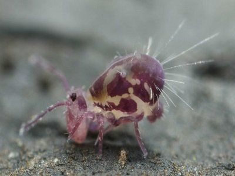
Bij regen na droogte hangt er een specifieke geur in de lucht. Die vinden we aangenaam. Deze geur leidt tot gevoelens van hoop en vernieuwing zei iemand laatst.
Lees meer WADBODEMS 
De Duitse bodemkundige vereniging kiest ieder jaar de bodem van het jaar. Dit jaar is het de wadbodem.
VIRUSSEN. ZITTEN DIE OOK IN DE BODEM? 
In de zee zijn virussen onmisbaar. In mens, dier en plant geven ze problemen, soms zeer grote. Hoe is het nu met virussen in de bodem?
DE BODEMSTRUCTUUR DIT VOORJAAR 
Door de vele regen dit voorjaar staat er vaak water onder in de bouwvoor. Ook in de bouwvoor is de structuur door de vele regen vaak slecht. Later werd het droog en de grond keihard waardoor de bodembewerking moeilijk is. Opvallend is de vaak zeer mooie grond onder groenbemesters.
Lees meer 25 JAAR KRINGLOOP. EEN ANALYSE 
Het leerbedrijf Warmonderhof in Dronten is een biologisch-dynamisch gemengd bedrijf met melkvee, gras(klaver), graan en hakvruchten. Er worden geen mest, voer of strooisel aangekocht en geen bestrijdingsmiddelen gebruikt. De gewasopbrengsten zijn door de jaren heen gestegen tot een behoorlijk hoog niveau, de emissies - behalve die van methaan - zijn laag en de bedrijfsopzet is economisch haalbaar. In dit rapport wordt nagegaan hoe het bedrijf functioneert en in hoeverre het als een baken kan fungeren voor de transitie naar een kringlooplandbouw.
Download het rapport Lees meer
12 MOGELIJKHEDEN OM STIKSTOFVERLIEZEN BIJ HET MELKVEEBEDRIJF TE BEPERKEN 
De melkveehouderij veroorzaakt ca 46 % van Nederlandse stikstofemissies. Wat is daar aan te doen?
Lees meer HET BOEK OVER DE REGENWORM VAN CHARLES DARWIN VERTAALD 
Charles Darwin was zich niet zo bewust van het belang van regenwormen voor de bodemvruchtbaarheid. Hij ontdekte wel veel eigenschappen van wormen.Lees meer BIODIVERS BOEREN. EEN VISIE OP DE TOEKOMST VAN DE NEDERLANDSE LANDBOUW 
Een nieuw boek over een duurzame toekomstige landbouw. Met een sterk onderdeel rond bodemvruchtbaarheid.
Lees meer

Actueel 2019
 ## DE vn: meer aandacht voor de bodem. Het VN-IPCC rapport
## DE vn: meer aandacht voor de bodem. Het VN-IPCC rapport
 200 landen steunen het VN - IPCC rapport over de toekomstige voedselvoorziening van de wereld. Werk aan de winkel is de conclusie. Meer aandacht voor de bodem is hierbij een centraal themaLees meer >
200 landen steunen het VN - IPCC rapport over de toekomstige voedselvoorziening van de wereld. Werk aan de winkel is de conclusie. Meer aandacht voor de bodem is hierbij een centraal themaLees meer >
Enquête: Boeren kijken te weinig naar de bodemstructuur
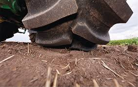 Bodemverdichting is een belangrijk probleem. De meeste boeren hebben dat niet in de gaten.Het blad Akkerwijzer doet verslag van een Agrio-enquête bij 59 loonbedrijven over de werkwijze van boeren rond het probleem van bodemverdichting. Bijna 3 van de 4 loonwerkers zeiden dat boeren te weinig geld uitgeven aan vermindering van bodemverdichting. Lees meer >
Nu verschenen: het boek Bodemsignalen grasland.
 Onderzoek en praktijk komen samen in dit unieke werk. Voor het eerst wordt de bodem van grasland in beeld gebracht. Het bodemprofiel komt in beeld, maar ook chemie, water, wortels, structuur en bodemleven. Alles vertaald naar praktijkmaatregelen. Kijk verder op de website van uitgever Roodbont:
Onderzoek en praktijk komen samen in dit unieke werk. Voor het eerst wordt de bodem van grasland in beeld gebracht. Het bodemprofiel komt in beeld, maar ook chemie, water, wortels, structuur en bodemleven. Alles vertaald naar praktijkmaatregelen. Kijk verder op de website van uitgever Roodbont:
Lees meer >

Bodem onder het landschap
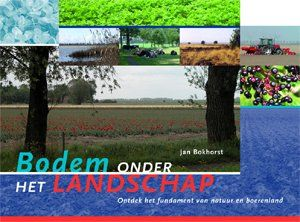
Nieuwe druk boek: Bodem onder het Landschap.
De bodem heeft een grote invloed op landschap, natuur en landbouw. Het beste overzicht hierover is het boek
Bodem onder het Landschap . Nu een derde aangevulde druk.
Overzicht website
Bodem
Bodems Nederland
- Flevopolders
- Zeeklei
- Oude rivierklei en loess
- Veenkoloniën
- Zware kleigronden
- Beekdalgronden
- Heideontginningen
- Oude akkers
- Veengronden
- Rivierkleigronden
- Duinzanden
- Overzicht Nederland
Bodembeheer per teelt
- Akkerbouw Flevoland
- Akkerbouw zeeklei
- Akkerbouw kalkarme klei
- Akkerbouw loess
- Akkerbouw veenkoloniën
- Grasland veen
- Grasland zand
- Grasland zavel en klei
- Groenteteelt Noord-Holland
- Groenteteelt zand
- Bollenteelt zand
- Bollenteelt klei
- Boomkwekerij
- Druiven
- Fruit
- Kasteelt
- Stadslandbouw
- Golfbanen
- Sportvelden
- Moestuin